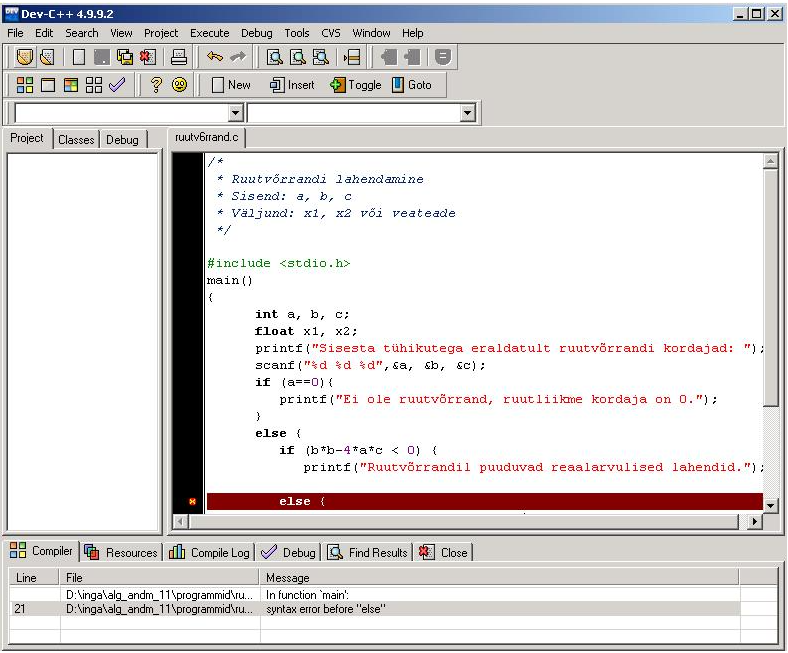
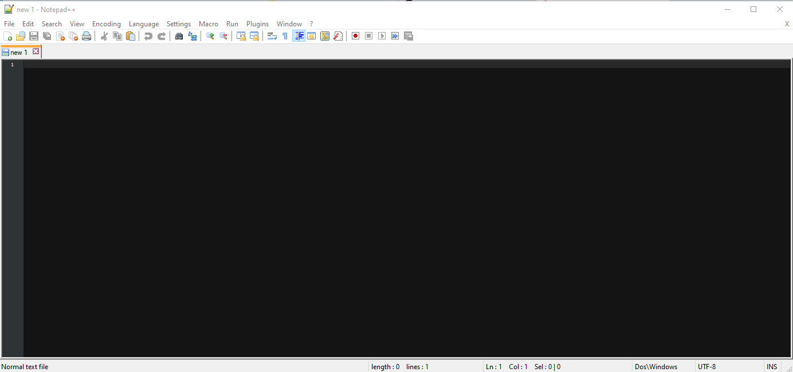

Lowercase
Mis on lowercase vahendid
- Visual Studio Code
- Visual Studio 2022
- Thonny
Mille jaoks neid kasutatakse
(lower CASE tools) keskenduvad teostusele, kus mudelitest saab tegelik tarkvaratoode.
Nad toetavad andmebaasi struktuuri genereerimist, koodi genereerimist, testide läbiviimist,
koodi versioonihaldust, konfiguratsioonihaldust, pöördprojekteerimist jms
Milliseid vahendeid olen ise juba kasutanud
- Visual Studio Code
- Visual Studio 2022
- Thonny
2 näidet Lowercase vahendist mida veel kasutanud ei ole
- Bloodshed DevC++
- Notepad++
Bloodshed DevC++:

Notepad++:

Mida tööristaga teha saab(DevC++ ja Notepad++)
DevC++
Sama mis VSCode ja VS2022
Notepad++
Sama mis VSCode ja VS2022
Lingid
C ja C++
vahendid
Info